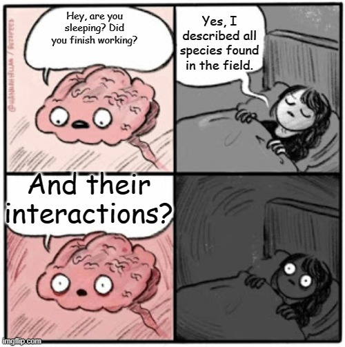
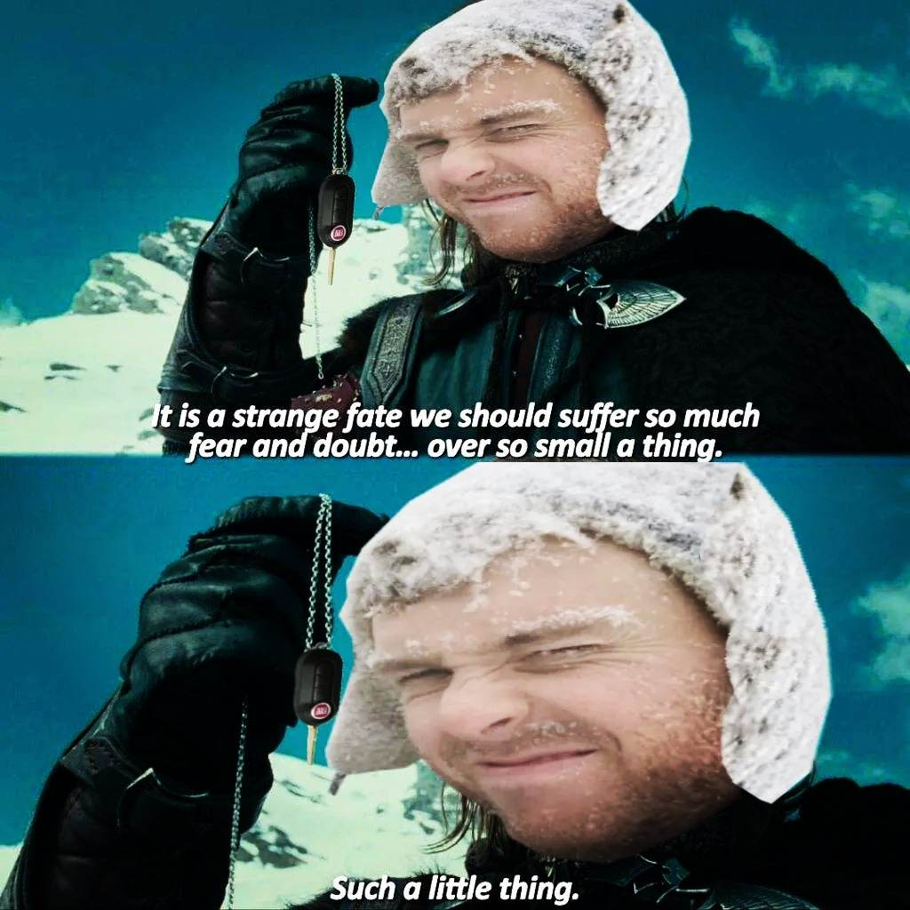

About
My values
My work is firmly rooted in the principles of reproducibility and open science. I am dedicated to making my research transparent and sharing my data, scripts, and results with the broader community whenever possible. Acknowledging the potential environmental and human impacts of scientific research, I am mindful that data science can lead to harm through the misuse of data and algorithms and the high energy and resource consumption of research endeavors. Additionally, I recognize the colonial roots of western scientific methods and practices and the risk to exacerbate social inequalities through scientific work. To mitigate these harms, I am committed to educating myself on these issues and fostering a more respectful, diverse, and inclusive environment. I firmly believe that science, guided by strong intersectional feminist principles, should be harnessed to improve our lives and oriented towards finding solutions to pressing global challenges such as climate change and the preservation of natural habitats, all the while being cognizant of our contribution to circles of oppression. By attentively listening to the needs and concerns of our community, we can ensure that science remains relevant and truly meaningful.
My academic journey
After spending nearly two years studying mathematics, I decided to switch to biology. I wanted to deepen my understanding of the environmental issues we face today. A little later, I eventually merged these two interests by starting a professional master’s in quantitative and computational biology. This enabled me to develop my programming skills and familiarize myself with the use of digital methods in ecology. These skills were invaluable to me when I started my scientific journey as a PhD student in computational biology.
During my academic journey, I came to realize the potential of integrating digital intelligence into ecology, as it makes it easier for us to study complex ecological systems. I had done very little programming before my graduate studies and the idea of writing code seemed daunting. However, as I delved deeper into my studies, I embraced the challenge and gradually developed a genuine appreciation for coding. It has now become something I thoroughly enjoy!
My research
To adequately protect our natural environments, the present state of biodiversity must be thoroughly described and understood. To do so, it is essential to comprehend how different species interact with each other, as this has a big impact on how nature works. For example, many animals depend on each other for food. However, studying these interactions is not easy because they can be hard to observe and can happen at different times and places. Imagine trying to watch animals talk to each other in the wild, it’s not that simple! My research centers around the use of computational methods to figure out these interactions using available biological information. My work comprises three main projects. First, recognizing the variability of these interactions, I am reviewing different ideas about the concept of chance when it comes to the uncertainty of species interactions (stochastic web project). Second, I use a principle called “maximum entropy” to predict and understand the organization of complex networks formed by the aggregation of these interactions (maximum entropy project). Third, I use different numerical tools to figure out which species interact with each other (network prediction project).

My hobbies and interests
In my spare time, I’ve become an avid walker, an occasional jogger (follow my progress on Strava!), and an amateur but enthusiastic ping-pong player. I find joy in hiking and playing all sorts of racket sports like tennis, badminton, and squash. I also like strategic board games and chess (play with me and be my friend on lichess). In my leisure time, I delve into urban and historical fictions and pursue learning new languages, currently focusing on Spanish and Hindi. Another enjoyable activity of mine is cooking (feel free to share your best vegan recipes with me), all the while listening to the captivating tunes of Styx, Supertramp, and Tears For Fears.

For more information about what I do, see IVADO Student Portraits.